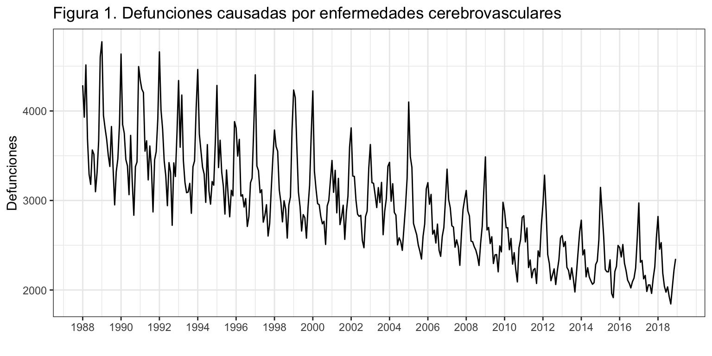
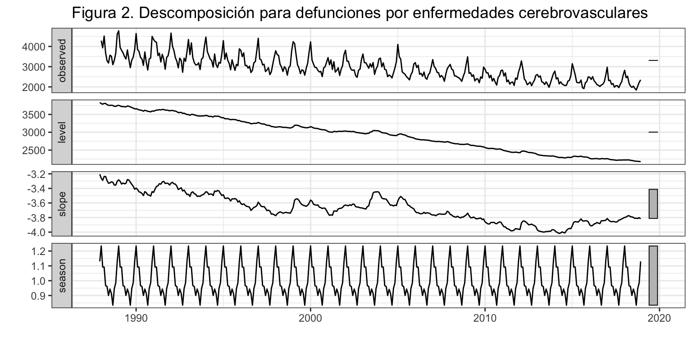
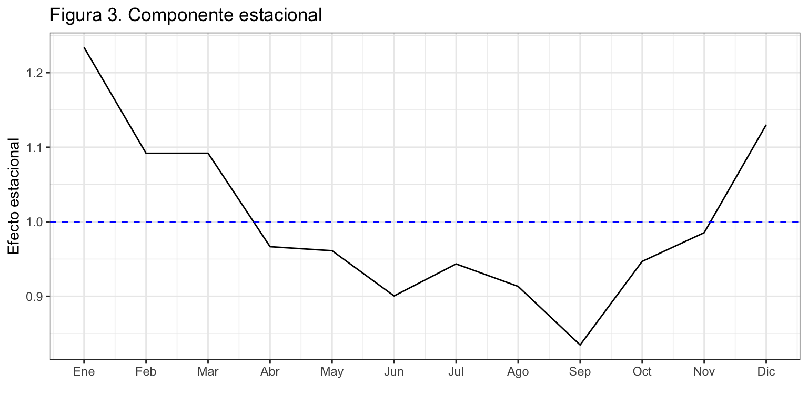
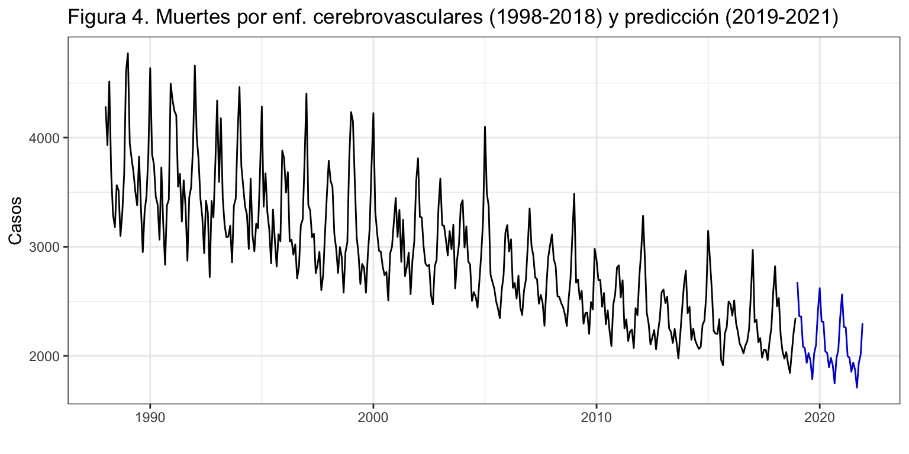
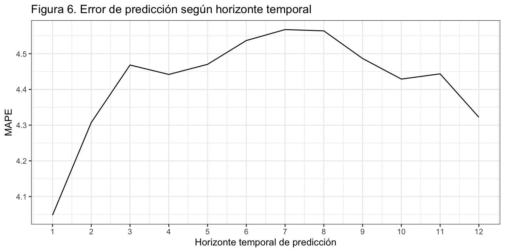
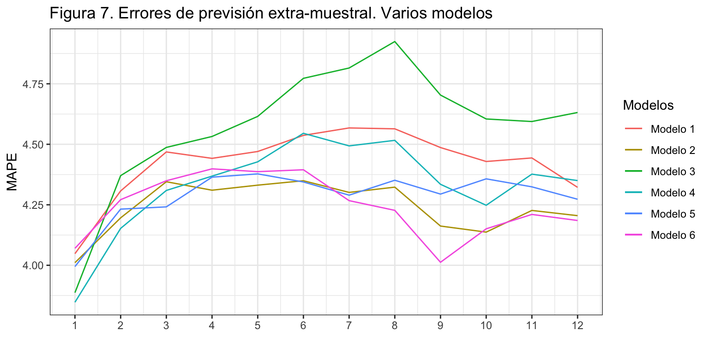

Introducción
Consideremos de nuevo la serie temporal correspondiente al número de defunciones causadas por enfermedades cerebrovasculares, Esta serie está disponible en el Instituto Nacional de Estadística desde enero de 1980 hasta diciembre de 2018, un total de 39 años o 468 meses.
En la descriptiva vimos que la descomposición revelaba la presencia de varios valores atípicos concentrados al inicio de la serie. Por este motivo, para el análisis por técnicas de alisado exponencial vamos a recortar la serie y considerarla solo desde enero de 1988, 31 años o 372 meses.
La serie presenta tendencia decreciente y estacionalidad de orden 12 en un claro esquema multiplicativo. Ya vimos que el determinante principal del efecto estacional es la temperatura.
DefEnfCer <- read.csv2("./series/Enfermedades cerebrovasculares.csv", header = TRUE)
DefEnfCer <- ts(DefEnfCer[,2], start = 1980, frequency = 12)
DefEnfCer <- window(DefEnfCer, start = 1988)
autoplot(DefEnfCer,
xlab = "",
ylab = "Defunciones",
main = "Figura 1. Defunciones causadas por enfermedades cerebrovasculares") +
scale_x_continuous(breaks= seq(1980, 2018, 2))

Ajuste por alisado exponencial e interpretación
Vamos a aplicar la metodología de alisado exponencial a la serie de defunciones. Si se estima el modelo sin imponer ninguna restricción ets identifica como modelo óptimo ETS(M,A,M).
DefEnfCerEts <- ets(DefEnfCer)
summary(DefEnfCerEts)
ETS(M,A,M)
Call:
ets(y = DefEnfCer)
Smoothing parameters:
alpha = 0.0725
beta = 0.0002
gamma = 0.0001
Initial states:
l = 3833.5826
b = -3.2059
s = 1.1301 0.9854 0.9468 0.8348 0.9133 0.9434
0.9005 0.9612 0.9666 1.092 1.0919 1.2339
sigma: 0.0516
AIC AICc BIC
5941.880 5943.609 6008.502
Training set error measures:
ME RMSE MAE MPE MAPE MASE ACF1
Training set -10.73983 158.9693 114.7663 -0.562124 3.75366 0.6687258 0.2345205
El modelo estimado tiene pendiente aditiva, estacionalidad multiplicativa y residuo multiplicativo: \[y_{t+1} = (l_t + b_t) \cdot s_{t+1-m} \cdot (1 + \varepsilon_{t+1}).\]
El valor de \(\alpha\) indica que el nivel de la serie ha ido variando muy lentamente en el tiempo. Los valores de \(\beta\) y \(\gamma\) son prácticamente cero e indican que ambas, pendiente y estacionalidad, se mantienen constantes en el tiempo. (Véase figura 2.)
autoplot(DefEnfCerEts,
xlab = "",
main = "Figura 2. Descomposición para defunciones por enfermedades cerebrovasculares")

La calidad del ajuste es bastante buena, con un MAPE de 3.8% y un RMSE de 159 casos (o 115 si usamos el MAE). Además, según el MASE, el modelo de alisado exponencial supone una mejora del 33% respecto del método ingenuo con estacionalidad, el más sencillo que podríamos aplicar.
Los últimos valores estimados del nivel y la estacionalidad, que corresponden a diciembre de 2018, nos permiten mostrar gráficamente la componente estacional (figura 3).
TT <- nrow(DefEnfCerEts$states)
DefEnfCerEts$states[TT,]
l b s1 s2 s3 s4 s5 s6 s7 s8
2173.27 -3.82 1.13 0.99 0.95 0.83 0.91 0.94 0.90 0.96
s9 s10 s11 s12
0.97 1.09 1.09 1.23
componenteEstacional <- DefEnfCerEts$states[TT, 14:3]
ggplot() +
geom_line(aes(x = 1:12, y = componenteEstacional)) +
geom_hline(yintercept = 1, colour = "blue", lty = 2) +
ggtitle("Figura 3. Componente estacional") +
xlab("") +
ylab("Efecto estacional") +
scale_x_continuous(breaks= 1:12,
labels = c("Ene", "Feb", "Mar", "Abr", "May", "Jun",
"Jul", "Ago", "Sep", "Oct", "Nov", "Dic"))

El nivel de las defunciones por enfermedades cerebrovasculares en diciembre de 2018 (última observación) es de 2,173 casos y la pendiente -3.8 casos, prácticamente nula. La mayor incidencia de las defunciones por enfermedades cerebrovasculares tiene lugar en invierno, en los meses de diciembre a marzo. En concreto, destaca el mes enero con un incremento del 23% (s12) en las defunciones por enfermedades cerebrovasculares respecto de la media anual. La incidencia en verano es menor que la media anual, observándose en septiembre un 17% menos de casos (s4). El efecto estacional estimado por el método de alisado es muy similar al estimado durante la descriptiva de la serie.
Predicción
Si pedimos los valores de predicción y su intervalo de confianza al 95% para los próximos tres años, tenemos (numéricamente sólo se muestra el primer año):
DefEnfCerEtsPre <- forecast(DefEnfCerEts, h = 36, level = 95)
DefEnfCerEtsPre
Point Forecast Lo 95 Hi 95
Jan 2019 2676.853 2406.259 2947.446
Feb 2019 2364.691 2125.020 2604.362
Mar 2019 2360.682 2120.782 2600.582
Apr 2019 2085.932 1873.389 2298.476
May 2019 2070.553 1859.014 2282.092
Jun 2019 1936.394 1738.033 2134.756
Jul 2019 2025.101 1817.096 2233.106
Aug 2019 1956.948 1755.403 2158.493
Sep 2019 1785.537 1601.150 1969.923
Oct 2019 2021.593 1812.266 2230.920
Nov 2019 2100.146 1882.097 2318.195
Dec 2019 2404.186 2153.893 2654.479
autoplot(DefEnfCerEtsPre,
xlab = "",
ylab = "Casos",
main = "Figura 4. Muertes por enf. cerebrovasculares (1998-2018) y predicción (2019-2021)",
PI = FALSE)

Las predicciones mantiene la tendencia decreciente observada en la serie. (Véase figura 4.)
Análisis del error
La figura 5 muestra el residuo del modelo, estimado aditivamente.
error <- residuals(DefEnfCerEts, type = "response")
sderror <- sd(error)
autoplot(error,
xlab = "",
ylab = "Error",
main = "Figura 5. Error + Intervención",
colour = "black") +
geom_hline(yintercept = c(-3, -2, 2 ,3)*sderror,
colour = c("red", "blue", "blue", "red"), lty = 2) +
scale_x_continuous(breaks= seq(1988, 2018, 2))

Se aprecian tres meses, febrero de 1999, enero de 2005 y febrero de 2012 en los que el residuo supera las tres desviaciones típicas porque el número de muertes por enfermedades cerebrovasculares fue muy superior al estimado por el modelo. Además, otros residuos cercanos a las tres desviaciones típicas son susceptibles de ser considerados intervención: enero de 1988, diciembre de 1990 y junio y agosto de 2003.
Validación: origen de predicción móvil
Asumimos que se precisan diez años para hacer una buena estimación, \(k=120\), y que el horizonte temporal es un año, \(h = 12\) meses. La siguiente rutina permite obtener el MAPE para previsiones con un horizonte temporal desde 1 mes hasta 12 meses.
k <- 120
h <- 12
TT <- length(DefEnfCer)
s <- TT - k - h
mapeAlisado <- matrix(NA, s + 1, h)
for (i in 0:s) {
train.set <- subset(DefEnfCer, start = i + 1, end = i + k)
test.set <- subset(DefEnfCer, start = i + k + 1, end = i + k + h)
fit <- ets(train.set, model = "MAM", damped = FALSE)
fcast<-forecast(fit, h = h)
mapeAlisado[i + 1,] <- 100*abs(test.set - fcast$mean)/test.set
}
errorAlisado <- colMeans(mapeAlisado)
errorAlisado
[1] 4.047885 4.307255 4.468396 4.441904 4.470256 4.536905 4.567599 4.563962
[9] 4.486596 4.428930 4.443595 4.322055
ggplot() +
geom_line(aes(x = 1:12, y = errorAlisado)) +
ggtitle("Figura 6. Error de predicción según horizonte temporal") +
xlab("Horizonte temporal de predicción") +
ylab("MAPE") +
scale_x_continuous(breaks= 1:12)

La figura 6 muestra que aunque el error depende del horizonte temporal de previsión, se mueve en una banda muy estrecha: entre el 4% para previsiones a un mes vista y el 4.6% para previsiones a 7 meses vista.
Modelos alternativos
¿Podemos reducir el error extra-muestral de previsión si cambiamos las opciones por defecto de ets o la serie a analizar? La figura 7 muestra el error de previsión extra-muestral según el horizonte de previsión para los siguientes modelos (todos sin amortiguamiento):
| 1 |
Ninguna |
MAM |
Máxima verosimilitud |
| 2 |
Ninguna |
MAM |
mínimo error en previsiones a 2 periodos vista |
| 3 |
Logaritmo |
AAA |
Máxima verosimilitud |
| 4 |
Logaritmo |
AAA |
mínimo error en previsiones a 2 periodos vista |
| 5 |
Defunciones por día |
MAM |
Máxima verosimilitud |
| 6 |
Defunciones por día |
MAM |
mínimo error en previsiones a 2 periodos vista |
En concreto los comandos utilizados han sido:
- Modelo 1:
ets(x, model = "MAM", damped = FALSE)
- Modelo 2:
ets(x, model = "MAM", damped = FALSE, opt.crit = "amse", nmse = 2)
- Modelo 3:
ets(x, model = "AAA", lambda = 0, biasadj = TRUE, damped = FALSE)
- Modelo 4:
ets(x, model = "AAA", lambda = 0, biasadj = TRUE, damped = FALSE, opt.crit = "amse", nmse = 2)
- Modelo 5:
ets(x/monthdays(x), model = "MAM", damped = FALSE)
- Modelo 6:
ets(x/monthdays(x), model = "MAM", damped = FALSE, opt.crit = "amse", nmse = 2)

De la figura 7 deducimos que aunque todos los métodos resultan similares en calidad de las predicciones en el corto plazo, en el medio y largo plazo las diferencias pueden ser significativas: la mayor diferencia entre los modelos se da para la previsión a ocho y nueve meses vista y es de 0.7 puntos porcentuales.
Si queremos entrar en matices:
- Globalmente el modelo que ofrece mejores previsiones es el modelo 6, realizado sobre las defunciones medias por día y donde el criterio para estimar los parámetros es la minimización del error de las previsiones a dos periodos vista. Este modelo es de los mejores en previsiones a corto y medio plazo y el mejor a largo plazo.
- A corto plazo destaca el modelo 4, seguido de los modelos 2 y 5.
- A medio plazo destacan los modelos 2 y 5.
Es decir, tanto la estrategia de predecir la serie de defunciones medias por día, (en lugar de la serie original) como la de usar como criterio para estimar los parámetros del modelo la minimización del error de previsión a dos periodos vista mejoran la calidad de las previsiones extra-muestrales. La combinación de estas dos estrategias es óptima para la previsiones a largo plazo.
LS0tCnRpdGxlOiAiRGVmdW5jaW9uZXMgcG9yIEVuZmVybWVkYWRlcyBDZXJlYnJvdmFzY3VsYXJlcyIKc3VidGl0bGU6ICJBbGlzYWRvIGV4cG9uZW5jaWFsIgphdXRob3I6ICJJdsOhbiBBcnJpYmFzIChEZXB0by4gQW7DoWxpc2lzIEVjb27Ds21pY28uIFVuaXZlcnNpdGF0IGRlIFZhbMOobmNpYSkiCm91dHB1dDogCiAgaHRtbF9kb2N1bWVudDoKICAgIHRoZW1lOiBjZXJ1bGVhbgogICAgaGlnaGxpZ2h0OiBweWdtZW50cyAKICAgIGZpZ19jYXB0aW9uOiBmYWxzZQogICAgZGZfcHJpbnQ6IGthYmxlCiAgICB0b2M6IHRydWUKICAgIHRvY19kZXB0aDogMgogICAgbnVtYmVyX3NlY3Rpb25zOiB0cnVlCiAgICBzZWxmX2NvbnRhaW5lZDogdHJ1ZQogICAgY29kZV9kb3dubG9hZDogdHJ1ZQotLS0KCmBgYHtyIGNodW5rX3NldHVwLCBlY2hvID0gRkFMU0V9CmtuaXRyOjpvcHRzX2NodW5rJHNldCh3YXJuaW5nID0gRkFMU0UsIAogICAgICAgICAgICAgICAgICAgICAgbWVzc2FnZSA9IEZBTFNFLCAKICAgICAgICAgICAgICAgICAgICAgIGNvbW1lbnQgPSAiIiwKICAgICAgICAgICAgICAgICAgICAgIGZpZy5hbGlnbiA9ICJjZW50ZXIiLCAKICAgICAgICAgICAgICAgICAgICAgIGZpZy5zaG93ID0gImhvbGQiLAogICAgICAgICAgICAgICAgICAgICAgZmlnLmhlaWdodCA9IDQsCiAgICAgICAgICAgICAgICAgICAgICBmaWcud2lkdGggPSA4LAogICAgICAgICAgICAgICAgICAgICAgb3V0LndpZHRoID0gIjgwJSIpIApgYGAKCmBgYHtyIG9wdGlvbnNfc2V0dXAsIGVjaG8gPSBGQUxTRX0Kb3B0aW9ucyhzY2lwZW4gPSA5OTkpICMtIHBhcmEgcXVpdGFyIGxhIG5vdGFjaW9uIGNpZW50aWZpY2EKYGBgCgpgYGB7ciBsaWJyZXJpYXMsIGVjaG8gPSBGQUxTRX0KbGlicmFyeShmb3JlY2FzdCkKbGlicmFyeShnZ3Bsb3QyKTsgdGhlbWVfc2V0KHRoZW1lX2J3KCkpCmxpYnJhcnkoZ3JpZEV4dHJhKQpsaWJyYXJ5KGdyaWQpCmBgYAoKXApcCgojIEludHJvZHVjY2nDs24KCkNvbnNpZGVyZW1vcyBkZSBudWV2byBsYSBzZXJpZSB0ZW1wb3JhbCBjb3JyZXNwb25kaWVudGUgYWwgbsO6bWVybyBkZSBkZWZ1bmNpb25lcyBjYXVzYWRhcyBwb3IgZW5mZXJtZWRhZGVzIGNlcmVicm92YXNjdWxhcmVzLCBFc3RhIHNlcmllIGVzdMOhIGRpc3BvbmlibGUgZW4gZWwgSW5zdGl0dXRvIE5hY2lvbmFsIGRlIEVzdGFkw61zdGljYSBkZXNkZSBlbmVybyBkZSAxOTgwIGhhc3RhIGRpY2llbWJyZSBkZSAyMDE4LCB1biB0b3RhbCBkZSAzOSBhw7FvcyBvIDQ2OCBtZXNlcy4KCkVuIGxhIGRlc2NyaXB0aXZhIHZpbW9zIHF1ZSBsYSBkZXNjb21wb3NpY2nDs24gcmV2ZWxhYmEgbGEgcHJlc2VuY2lhIGRlIHZhcmlvcyB2YWxvcmVzIGF0w61waWNvcyBjb25jZW50cmFkb3MgYWwgaW5pY2lvIGRlIGxhIHNlcmllLiBQb3IgZXN0ZSBtb3Rpdm8sIHBhcmEgZWwgYW7DoWxpc2lzIHBvciB0w6ljbmljYXMgZGUgYWxpc2FkbyBleHBvbmVuY2lhbCB2YW1vcyBhIHJlY29ydGFyIGxhIHNlcmllIHkgY29uc2lkZXJhcmxhIHNvbG8gZGVzZGUgZW5lcm8gZGUgMTk4OCwgMzEgYcOxb3MgbyAzNzIgbWVzZXMuCgpMYSBzZXJpZSBwcmVzZW50YSB0ZW5kZW5jaWEgZGVjcmVjaWVudGUgeSBlc3RhY2lvbmFsaWRhZCBkZSBvcmRlbiAxMiBlbiB1biBjbGFybyBlc3F1ZW1hIG11bHRpcGxpY2F0aXZvLiBZYSB2aW1vcyBxdWUgZWwgZGV0ZXJtaW5hbnRlIHByaW5jaXBhbCBkZWwgZWZlY3RvIGVzdGFjaW9uYWwgZXMgbGEgdGVtcGVyYXR1cmEuCgpgYGB7cn0KCkRlZkVuZkNlciA8LSByZWFkLmNzdjIoIi4vc2VyaWVzL0VuZmVybWVkYWRlcyBjZXJlYnJvdmFzY3VsYXJlcy5jc3YiLCBoZWFkZXIgPSBUUlVFKQpEZWZFbmZDZXIgPC0gdHMoRGVmRW5mQ2VyWywyXSwgc3RhcnQgPSAxOTgwLCBmcmVxdWVuY3kgPSAxMikKRGVmRW5mQ2VyIDwtIHdpbmRvdyhEZWZFbmZDZXIsIHN0YXJ0ID0gMTk4OCkKYGBgCgpgYGB7cn0KYXV0b3Bsb3QoRGVmRW5mQ2VyLAogICAgICAgICB4bGFiID0gIiIsCiAgICAgICAgIHlsYWIgPSAiRGVmdW5jaW9uZXMiLAogICAgICAgICBtYWluID0gIkZpZ3VyYSAxLiBEZWZ1bmNpb25lcyBjYXVzYWRhcyBwb3IgZW5mZXJtZWRhZGVzIGNlcmVicm92YXNjdWxhcmVzIikgKwogIHNjYWxlX3hfY29udGludW91cyhicmVha3M9IHNlcSgxOTgwLCAyMDE4LCAyKSkgCmBgYAoKXApcCgojIEFqdXN0ZSBwb3IgYWxpc2FkbyBleHBvbmVuY2lhbCBlIGludGVycHJldGFjacOzbgoKVmFtb3MgYSBhcGxpY2FyIGxhIG1ldG9kb2xvZ8OtYSBkZSBhbGlzYWRvIGV4cG9uZW5jaWFsIGEgbGEgc2VyaWUgZGUgZGVmdW5jaW9uZXMuIFNpIHNlIGVzdGltYSBlbCBtb2RlbG8gc2luIGltcG9uZXIgbmluZ3VuYSByZXN0cmljY2nDs24gYGV0c2AgaWRlbnRpZmljYSBjb21vIG1vZGVsbyDDs3B0aW1vIEVUUyhNLEEsTSkuCgpgYGB7cn0KRGVmRW5mQ2VyRXRzIDwtIGV0cyhEZWZFbmZDZXIpCnN1bW1hcnkoRGVmRW5mQ2VyRXRzKSAKYGBgCgpFbCBtb2RlbG8gZXN0aW1hZG8gdGllbmUgcGVuZGllbnRlIGFkaXRpdmEsIGVzdGFjaW9uYWxpZGFkIG11bHRpcGxpY2F0aXZhIHkgcmVzaWR1byBtdWx0aXBsaWNhdGl2bzoKJCR5X3t0KzF9ID0gKGxfdCArIGJfdCkgXGNkb3Qgc197dCsxLW19IFxjZG90ICgxICsgXHZhcmVwc2lsb25fe3QrMX0pLiQkCgpFbCB2YWxvciBkZSAkXGFscGhhJCBpbmRpY2EgcXVlIGVsIG5pdmVsIGRlIGxhIHNlcmllIGhhIGlkbyB2YXJpYW5kbyBtdXkgbGVudGFtZW50ZSBlbiBlbCB0aWVtcG8uIExvcyB2YWxvcmVzIGRlICRcYmV0YSQgeSAkXGdhbW1hJCBzb24gcHLDoWN0aWNhbWVudGUgY2VybyBlIGluZGljYW4gcXVlIGFtYmFzLCBwZW5kaWVudGUgeSBlc3RhY2lvbmFsaWRhZCwgc2UgbWFudGllbmVuIGNvbnN0YW50ZXMgZW4gZWwgdGllbXBvLiAoVsOpYXNlIGZpZ3VyYSAyLikKCmBgYHtyfQphdXRvcGxvdChEZWZFbmZDZXJFdHMsCiAgICAgICAgIHhsYWIgPSAiIiwKICAgICAgICAgbWFpbiA9ICJGaWd1cmEgMi4gRGVzY29tcG9zaWNpw7NuIHBhcmEgZGVmdW5jaW9uZXMgcG9yIGVuZmVybWVkYWRlcyBjZXJlYnJvdmFzY3VsYXJlcyIpCmBgYAoKTGEgY2FsaWRhZCBkZWwgYWp1c3RlIGVzIGJhc3RhbnRlIGJ1ZW5hLCBjb24gdW4gTUFQRSBkZSAzLjglIHkgdW4gUk1TRSBkZSAxNTkgY2Fzb3MgKG8gMTE1IHNpIHVzYW1vcyBlbCBNQUUpLiBBZGVtw6FzLCBzZWfDum4gZWwgTUFTRSwgZWwgbW9kZWxvIGRlIGFsaXNhZG8gZXhwb25lbmNpYWwgc3Vwb25lIHVuYSBtZWpvcmEgZGVsIDMzJSByZXNwZWN0byBkZWwgbcOpdG9kbyBpbmdlbnVvIGNvbiBlc3RhY2lvbmFsaWRhZCwgZWwgbcOhcyBzZW5jaWxsbyBxdWUgcG9kcsOtYW1vcyBhcGxpY2FyLgogICAgICAKTG9zIMO6bHRpbW9zIHZhbG9yZXMgZXN0aW1hZG9zIGRlbCBuaXZlbCB5IGxhIGVzdGFjaW9uYWxpZGFkLCBxdWUgY29ycmVzcG9uZGVuIGEgZGljaWVtYnJlIGRlIDIwMTgsIG5vcyBwZXJtaXRlbiBtb3N0cmFyIGdyw6FmaWNhbWVudGUgbGEgY29tcG9uZW50ZSBlc3RhY2lvbmFsIChmaWd1cmEgMykuCgpgYGB7ciwgZXZhbCA9IEZBTFNFfQpUVCA8LSBucm93KERlZkVuZkNlckV0cyRzdGF0ZXMpCkRlZkVuZkNlckV0cyRzdGF0ZXNbVFQsXQpgYGAKCmBgYHtyLCBlY2hvID0gRkFMU0V9ClRUIDwtIG5yb3coRGVmRW5mQ2VyRXRzJHN0YXRlcykKcm91bmQoRGVmRW5mQ2VyRXRzJHN0YXRlc1tUVCxdLDIpCmBgYAoKYGBge3J9CmNvbXBvbmVudGVFc3RhY2lvbmFsIDwtIERlZkVuZkNlckV0cyRzdGF0ZXNbVFQsIDE0OjNdCgpnZ3Bsb3QoKSArCiAgZ2VvbV9saW5lKGFlcyh4ID0gMToxMiwgeSA9IGNvbXBvbmVudGVFc3RhY2lvbmFsKSkgKyAKICBnZW9tX2hsaW5lKHlpbnRlcmNlcHQgPSAxLCBjb2xvdXIgPSAiYmx1ZSIsIGx0eSA9IDIpICsKICBnZ3RpdGxlKCJGaWd1cmEgMy4gQ29tcG9uZW50ZSBlc3RhY2lvbmFsIikgKwogIHhsYWIoIiIpICsKICB5bGFiKCJFZmVjdG8gZXN0YWNpb25hbCIpICsKICBzY2FsZV94X2NvbnRpbnVvdXMoYnJlYWtzPSAxOjEyLCAKICAgICAgICAgICAgICAgICAgICAgbGFiZWxzID0gYygiRW5lIiwgIkZlYiIsICJNYXIiLCAiQWJyIiwgIk1heSIsICJKdW4iLCAKICAgICAgICAgICAgICAgICAgICAgICAgICAgICAgICAiSnVsIiwgIkFnbyIsICJTZXAiLCAiT2N0IiwgIk5vdiIsICJEaWMiKSkgCmBgYAoKRWwgbml2ZWwgZGUgbGFzIGRlZnVuY2lvbmVzIHBvciBlbmZlcm1lZGFkZXMgY2VyZWJyb3Zhc2N1bGFyZXMgZW4gZGljaWVtYnJlIGRlIDIwMTggKMO6bHRpbWEgb2JzZXJ2YWNpw7NuKSBlcyBkZSAyLDE3MyBjYXNvcyB5IGxhIHBlbmRpZW50ZSAtMy44IGNhc29zLCBwcsOhY3RpY2FtZW50ZSBudWxhLiBMYSBtYXlvciBpbmNpZGVuY2lhIGRlIGxhcyBkZWZ1bmNpb25lcyBwb3IgZW5mZXJtZWRhZGVzIGNlcmVicm92YXNjdWxhcmVzIHRpZW5lIGx1Z2FyIGVuIGludmllcm5vLCBlbiBsb3MgbWVzZXMgZGUgZGljaWVtYnJlIGEgbWFyem8uIEVuIGNvbmNyZXRvLCBkZXN0YWNhIGVsIG1lcyBlbmVybyBjb24gdW4gaW5jcmVtZW50byBkZWwgMjMlIChgczEyYCkgZW4gbGFzIGRlZnVuY2lvbmVzIHBvciBlbmZlcm1lZGFkZXMgY2VyZWJyb3Zhc2N1bGFyZXMgcmVzcGVjdG8gZGUgbGEgbWVkaWEgYW51YWwuIExhIGluY2lkZW5jaWEgZW4gdmVyYW5vIGVzIG1lbm9yIHF1ZSBsYSBtZWRpYSBhbnVhbCwgb2JzZXJ2w6FuZG9zZSBlbiBzZXB0aWVtYnJlIHVuIDE3JSBtZW5vcyBkZSBjYXNvcyAoYHM0YCkuIEVsIGVmZWN0byBlc3RhY2lvbmFsIGVzdGltYWRvIHBvciBlbCBtw6l0b2RvIGRlIGFsaXNhZG8gZXMgbXV5IHNpbWlsYXIgYWwgZXN0aW1hZG8gZHVyYW50ZSBsYSBkZXNjcmlwdGl2YSBkZSBsYSBzZXJpZS4KClwKXAoKIyBQcmVkaWNjacOzbgoKU2kgcGVkaW1vcyBsb3MgdmFsb3JlcyBkZSBwcmVkaWNjacOzbiB5IHN1IGludGVydmFsbyBkZSBjb25maWFuemEgYWwgOTUlIHBhcmEgbG9zIHByw7N4aW1vcyB0cmVzIGHDsW9zLCB0ZW5lbW9zIChudW3DqXJpY2FtZW50ZSBzw7NsbyBzZSBtdWVzdHJhIGVsIHByaW1lciBhw7FvKToKCmBgYHtyLGV2YWw9RkFMU0V9CkRlZkVuZkNlckV0c1ByZSA8LSBmb3JlY2FzdChEZWZFbmZDZXJFdHMsIGggPSAzNiwgbGV2ZWwgPSA5NSkKRGVmRW5mQ2VyRXRzUHJlCmBgYAoKYGBge3IsZWNobz1GQUxTRX0KRGVmRW5mQ2VyRXRzUHJlIDwtIGZvcmVjYXN0KERlZkVuZkNlckV0cywgaCA9IDM2LCBsZXZlbCA9IDk1KQpmb3JlY2FzdChEZWZFbmZDZXJFdHMsaCA9IDEyLCBsZXZlbCA9IDk1KQpgYGAKCmBgYHtyfQphdXRvcGxvdChEZWZFbmZDZXJFdHNQcmUsCiAgICAgICAgIHhsYWIgPSAiIiwKICAgICAgICAgeWxhYiA9ICJDYXNvcyIsCiAgICAgICAgIG1haW4gPSAiRmlndXJhIDQuIE11ZXJ0ZXMgcG9yIGVuZi4gY2VyZWJyb3Zhc2N1bGFyZXMgKDE5OTgtMjAxOCkgeSBwcmVkaWNjacOzbiAoMjAxOS0yMDIxKSIsCiAgICAgICAgIFBJID0gRkFMU0UpCmBgYAoKTGFzIHByZWRpY2Npb25lcyBtYW50aWVuZSBsYSB0ZW5kZW5jaWEgZGVjcmVjaWVudGUgb2JzZXJ2YWRhIGVuIGxhIHNlcmllLiAoVsOpYXNlIGZpZ3VyYSA0LikKClwKXAoKIyBBbsOhbGlzaXMgZGVsIGVycm9yCgpMYSAgZmlndXJhIDUgbXVlc3RyYSBlbCByZXNpZHVvIGRlbCBtb2RlbG8sIGVzdGltYWRvIGFkaXRpdmFtZW50ZS4KCmBgYHtyfQplcnJvciA8LSByZXNpZHVhbHMoRGVmRW5mQ2VyRXRzLCB0eXBlID0gInJlc3BvbnNlIikKc2RlcnJvciA8LSBzZChlcnJvcikKCmF1dG9wbG90KGVycm9yLAogICAgICAgICB4bGFiID0gIiIsCiAgICAgICAgIHlsYWIgPSAiRXJyb3IiLAogICAgICAgICBtYWluID0gIkZpZ3VyYSA1LiBFcnJvciArIEludGVydmVuY2nDs24iLAogICAgICAgICBjb2xvdXIgPSAiYmxhY2siKSArCiAgZ2VvbV9obGluZSh5aW50ZXJjZXB0ID0gYygtMywgLTIsIDIgLDMpKnNkZXJyb3IsIAogICAgICAgICAgICAgY29sb3VyID0gYygicmVkIiwgImJsdWUiLCAiYmx1ZSIsICJyZWQiKSwgbHR5ID0gMikgKyAKICBzY2FsZV94X2NvbnRpbnVvdXMoYnJlYWtzPSBzZXEoMTk4OCwgMjAxOCwgMikpIApgYGAKClNlIGFwcmVjaWFuIHRyZXMgbWVzZXMsIGZlYnJlcm8gZGUgMTk5OSwgZW5lcm8gZGUgMjAwNSB5IGZlYnJlcm8gZGUgMjAxMiBlbiBsb3MgcXVlIGVsIHJlc2lkdW8gc3VwZXJhIGxhcyB0cmVzIGRlc3ZpYWNpb25lcyB0w61waWNhcyBwb3JxdWUgZWwgbsO6bWVybyBkZSBtdWVydGVzIHBvciBlbmZlcm1lZGFkZXMgY2VyZWJyb3Zhc2N1bGFyZXMgZnVlIG11eSBzdXBlcmlvciBhbCBlc3RpbWFkbyBwb3IgZWwgbW9kZWxvLiBBZGVtw6FzLCBvdHJvcyByZXNpZHVvcyBjZXJjYW5vcyBhIGxhcyB0cmVzIGRlc3ZpYWNpb25lcyB0w61waWNhcyBzb24gc3VzY2VwdGlibGVzIGRlIHNlciBjb25zaWRlcmFkb3MgaW50ZXJ2ZW5jacOzbjogZW5lcm8gZGUgMTk4OCwgZGljaWVtYnJlIGRlIDE5OTAgeSBqdW5pbyB5IGFnb3N0byBkZSAyMDAzLiAKClwKXAoKIyBWYWxpZGFjacOzbjogb3JpZ2VuIGRlIHByZWRpY2Npw7NuIG3Ds3ZpbAoKQXN1bWltb3MgcXVlIHNlIHByZWNpc2FuIGRpZXogYcOxb3MgcGFyYSBoYWNlciB1bmEgYnVlbmEgZXN0aW1hY2nDs24sICRrPTEyMCQsIHkgcXVlIGVsIGhvcml6b250ZSB0ZW1wb3JhbCBlcyB1biBhw7FvLCAkaCA9IDEyJCBtZXNlcy4gTGEgc2lndWllbnRlIHJ1dGluYSBwZXJtaXRlIG9idGVuZXIgZWwgTUFQRSBwYXJhIHByZXZpc2lvbmVzIGNvbiB1biBob3Jpem9udGUgdGVtcG9yYWwgZGVzZGUgMSBtZXMgaGFzdGEgMTIgbWVzZXMuCiAgCmBgYHtyfSAgCmsgPC0gMTIwICAgICAgICAgICAgICAgICAKaCA8LSAxMiAgICAgICAgICAgICAgICAgIApUVCA8LSBsZW5ndGgoRGVmRW5mQ2VyKSAgCnMgPC0gVFQgLSBrIC0gaCAgICAgICAgICAKCm1hcGVBbGlzYWRvIDwtIG1hdHJpeChOQSwgcyArIDEsIGgpCmZvciAoaSBpbiAwOnMpIHsKICB0cmFpbi5zZXQgPC0gc3Vic2V0KERlZkVuZkNlciwgc3RhcnQgPSBpICsgMSwgZW5kID0gaSArIGspCiAgdGVzdC5zZXQgPC0gIHN1YnNldChEZWZFbmZDZXIsIHN0YXJ0ID0gaSArIGsgKyAxLCBlbmQgPSBpICsgayArIGgpCiAgCiAgZml0IDwtIGV0cyh0cmFpbi5zZXQsIG1vZGVsID0gIk1BTSIsIGRhbXBlZCA9IEZBTFNFKQogIGZjYXN0PC1mb3JlY2FzdChmaXQsIGggPSBoKQogIG1hcGVBbGlzYWRvW2kgKyAxLF0gPC0gMTAwKmFicyh0ZXN0LnNldCAtIGZjYXN0JG1lYW4pL3Rlc3Quc2V0Cn0KCmVycm9yQWxpc2FkbyA8LSBjb2xNZWFucyhtYXBlQWxpc2FkbykKZXJyb3JBbGlzYWRvCgpnZ3Bsb3QoKSArCiAgZ2VvbV9saW5lKGFlcyh4ID0gMToxMiwgeSA9IGVycm9yQWxpc2FkbykpICsKICBnZ3RpdGxlKCJGaWd1cmEgNi4gRXJyb3IgZGUgcHJlZGljY2nDs24gc2Vnw7puIGhvcml6b250ZSB0ZW1wb3JhbCIpICsKICB4bGFiKCJIb3Jpem9udGUgdGVtcG9yYWwgZGUgcHJlZGljY2nDs24iKSArCiAgeWxhYigiTUFQRSIpICsKICBzY2FsZV94X2NvbnRpbnVvdXMoYnJlYWtzPSAxOjEyKQpgYGAKCkxhIGZpZ3VyYSA2IG11ZXN0cmEgcXVlIGF1bnF1ZSBlbCBlcnJvciBkZXBlbmRlIGRlbCBob3Jpem9udGUgdGVtcG9yYWwgZGUgcHJldmlzacOzbiwgc2UgbXVldmUgZW4gdW5hIGJhbmRhIG11eSBlc3RyZWNoYTogZW50cmUgZWwgNCUgcGFyYSBwcmV2aXNpb25lcyBhIHVuIG1lcyB2aXN0YSB5IGVsIDQuNiUgcGFyYSBwcmV2aXNpb25lcyBhIDcgbWVzZXMgdmlzdGEuCgpcClwKCiMgTW9kZWxvcyBhbHRlcm5hdGl2b3MKCsK/UG9kZW1vcyByZWR1Y2lyIGVsIGVycm9yIGV4dHJhLW11ZXN0cmFsIGRlIHByZXZpc2nDs24gc2kgY2FtYmlhbW9zIGxhcyBvcGNpb25lcyBwb3IgZGVmZWN0byBkZSBgZXRzYCBvIGxhIHNlcmllIGEgYW5hbGl6YXI/IExhIGZpZ3VyYSA3IG11ZXN0cmEgZWwgZXJyb3IgZGUgcHJldmlzacOzbiBleHRyYS1tdWVzdHJhbCBzZWfDum4gZWwgaG9yaXpvbnRlIGRlIHByZXZpc2nDs24gcGFyYSBsb3Mgc2lndWllbnRlcyBtb2RlbG9zICh0b2RvcyBzaW4gYW1vcnRpZ3VhbWllbnRvKToKCnwqKklkKiogIHwqKlRyYW5zZm9ybWFjacOzbioqIHwqKk1vZGVsbyoqIHwqKk3DqXRvZG8gZXN0aW1hY2nDs24qKiB8Cnw6LS0tLS0tLXw6LS0tLS0tLS0tLS0tLS0tLS0tfDotLS0tLS0tLS0tfDotLS0tLS0tLS0tLS0tLS0tLS0tLS18CnwgMSAgICAgIHxOaW5ndW5hICAgICAgICAgICAgfE1BTSAgICAgICAgfE3DoXhpbWEgdmVyb3NpbWlsaXR1ZCAgfAp8IDIgICAgICB8TmluZ3VuYSAgICAgICAgICAgIHxNQU0gICAgICAgIHxtw61uaW1vIGVycm9yIGVuIHByZXZpc2lvbmVzIGEgMiBwZXJpb2RvcyB2aXN0YSAgfAp8IDMgICAgICB8TG9nYXJpdG1vICAgICAgICAgIHxBQUEgICAgICAgIHxNw6F4aW1hIHZlcm9zaW1pbGl0dWQgIHwKfCA0ICAgICAgfExvZ2FyaXRtbyAgICAgICAgICB8QUFBICAgICAgICB8bcOtbmltbyBlcnJvciBlbiBwcmV2aXNpb25lcyBhIDIgcGVyaW9kb3MgdmlzdGEgIHwKfCA1ICAgICAgfERlZnVuY2lvbmVzIHBvciBkw61hIHxNQU0gICAgICAgIHxNw6F4aW1hIHZlcm9zaW1pbGl0dWQgIHwKfCA2ICAgICAgfERlZnVuY2lvbmVzIHBvciBkw61hIHxNQU0gICAgICAgIHxtw61uaW1vIGVycm9yIGVuIHByZXZpc2lvbmVzIGEgMiBwZXJpb2RvcyB2aXN0YSAgfAoKRW4gY29uY3JldG8gbG9zIGNvbWFuZG9zIHV0aWxpemFkb3MgaGFuIHNpZG86IAoKKiBNb2RlbG8gMTogYGV0cyh4LCBtb2RlbCA9ICJNQU0iLCBkYW1wZWQgPSBGQUxTRSlgCiogTW9kZWxvIDI6IGBldHMoeCwgbW9kZWwgPSAiTUFNIiwgZGFtcGVkID0gRkFMU0UsIG9wdC5jcml0ID0gImFtc2UiLCBubXNlID0gMilgCiogTW9kZWxvIDM6IGBldHMoeCwgbW9kZWwgPSAiQUFBIiwgbGFtYmRhID0gMCwgYmlhc2FkaiA9IFRSVUUsIGRhbXBlZCA9IEZBTFNFKWAKKiBNb2RlbG8gNDogYGV0cyh4LCBtb2RlbCA9ICJBQUEiLCBsYW1iZGEgPSAwLCBiaWFzYWRqID0gVFJVRSwgZGFtcGVkID0gRkFMU0UsICBvcHQuY3JpdCA9ICJhbXNlIiwgbm1zZSA9IDIpYAoqIE1vZGVsbyA1OiBgZXRzKHgvbW9udGhkYXlzKHgpLCBtb2RlbCA9ICJNQU0iLCBkYW1wZWQgPSBGQUxTRSlgCiogTW9kZWxvIDY6IGBldHMoeC9tb250aGRheXMoeCksIG1vZGVsID0gIk1BTSIsIGRhbXBlZCA9IEZBTFNFLCBvcHQuY3JpdCA9ICJhbXNlIiwgbm1zZSA9IDIpYAoKXAoKYGBge3IsIGVjaG8gPSBGQUxTRX0gIAprIDwtIDEyMCAgICAgICAgICAgICAgICAgCmggPC0gMTIgICAgICAgICAgICAgICAgICAKVFQgPC0gbGVuZ3RoKERlZkVuZkNlcikgIApzIDwtIFRUIC0gayAtIGggICAgICAgICAgCgptYXBlQWxpc2FkbzEgPC0gbWF0cml4KE5BLCBzICsgMSwgaCkKbWFwZUFsaXNhZG8yIDwtIG1hdHJpeChOQSwgcyArIDEsIGgpCm1hcGVBbGlzYWRvMyA8LSBtYXRyaXgoTkEsIHMgKyAxLCBoKQptYXBlQWxpc2FkbzQgPC0gbWF0cml4KE5BLCBzICsgMSwgaCkKbWFwZUFsaXNhZG81IDwtIG1hdHJpeChOQSwgcyArIDEsIGgpCm1hcGVBbGlzYWRvNiA8LSBtYXRyaXgoTkEsIHMgKyAxLCBoKQoKZm9yIChpIGluIDA6cykgewogIHRyYWluLnNldCA8LSBzdWJzZXQoRGVmRW5mQ2VyLCBzdGFydCA9IGkgKyAxLCBlbmQgPSBpICsgaykKICB0ZXN0LnNldCA8LSAgc3Vic2V0KERlZkVuZkNlciwgc3RhcnQgPSBpICsgayArIDEsIGVuZCA9IGkgKyBrICsgaCkKICAKICBmaXQgPC0gZXRzKHRyYWluLnNldCwgbW9kZWwgPSAiTUFNIiwgZGFtcGVkID0gRkFMU0UpCiAgZmNhc3Q8LWZvcmVjYXN0KGZpdCwgaCA9IGgpCiAgbWFwZUFsaXNhZG8xW2kgKyAxLF0gPC0gMTAwKmFicyh0ZXN0LnNldCAtIGZjYXN0JG1lYW4pL3Rlc3Quc2V0CiAgCiAgZml0IDwtIGV0cyh0cmFpbi5zZXQsIG1vZGVsID0gIk1BTSIsIGRhbXBlZCA9IEZBTFNFLCBvcHQuY3JpdCA9ICJhbXNlIiwgbm1zZSA9IDIpCiAgZmNhc3Q8LWZvcmVjYXN0KGZpdCwgaCA9IGgpCiAgbWFwZUFsaXNhZG8yW2kgKyAxLF0gPC0gMTAwKmFicyh0ZXN0LnNldCAtIGZjYXN0JG1lYW4pL3Rlc3Quc2V0CiAgCiAgZml0IDwtIGV0cyh0cmFpbi5zZXQsIG1vZGVsID0gIkFBQSIsIGxhbWJkYSA9IDAsIGJpYXNhZGogPSBUUlVFLCBkYW1wZWQgPSBGQUxTRSkKICBmY2FzdDwtZm9yZWNhc3QoZml0LCBoID0gaCwgYmlhc2FkaiA9IFRSVUUpCiAgbWFwZUFsaXNhZG8zW2kgKyAxLF0gPC0gMTAwKmFicyh0ZXN0LnNldCAtIGZjYXN0JG1lYW4pL3Rlc3Quc2V0CiAgCiAgZml0IDwtIGV0cyh0cmFpbi5zZXQsIG1vZGVsID0gIkFBQSIsIGxhbWJkYSA9IDAsIGJpYXNhZGogPSBUUlVFLCBkYW1wZWQgPSBGQUxTRSwgIG9wdC5jcml0ID0gImFtc2UiLCBubXNlID0gMikKICBmY2FzdDwtZm9yZWNhc3QoZml0LCBoID0gaCwgYmlhc2FkaiA9IFRSVUUpCiAgbWFwZUFsaXNhZG80W2kgKyAxLF0gPC0gMTAwKmFicyh0ZXN0LnNldCAtIGZjYXN0JG1lYW4pL3Rlc3Quc2V0CiAgCiAgZml0IDwtIGV0cyh0cmFpbi5zZXQvbW9udGhkYXlzKHRyYWluLnNldCksIG1vZGVsID0gIk1BTSIsIGRhbXBlZCA9IEZBTFNFKQogIGZjYXN0PC1mb3JlY2FzdChmaXQsIGggPSBoKQogIG1hcGVBbGlzYWRvNVtpICsgMSxdIDwtIDEwMCphYnModGVzdC5zZXQgLSBmY2FzdCRtZWFuICogbW9udGhkYXlzKGZjYXN0JG1lYW4pKS90ZXN0LnNldAogIAogIGZpdCA8LSBldHModHJhaW4uc2V0L21vbnRoZGF5cyh0cmFpbi5zZXQpLCBtb2RlbCA9ICJNQU0iLCBkYW1wZWQgPSBGQUxTRSwgb3B0LmNyaXQgPSAiYW1zZSIsIG5tc2UgPSAyKQogIGZjYXN0PC1mb3JlY2FzdChmaXQsIGggPSBoKQogIG1hcGVBbGlzYWRvNltpICsgMSxdIDwtIDEwMCphYnModGVzdC5zZXQgLSBmY2FzdCRtZWFuICogbW9udGhkYXlzKGZjYXN0JG1lYW4pKS90ZXN0LnNldAp9CgoKZXJyb3JBbGlzYWRvMSA8LSBjb2xNZWFucyhtYXBlQWxpc2FkbzEpCmVycm9yQWxpc2FkbzIgPC0gY29sTWVhbnMobWFwZUFsaXNhZG8yKQplcnJvckFsaXNhZG8zIDwtIGNvbE1lYW5zKG1hcGVBbGlzYWRvMykKZXJyb3JBbGlzYWRvNCA8LSBjb2xNZWFucyhtYXBlQWxpc2FkbzQpCmVycm9yQWxpc2FkbzUgPC0gY29sTWVhbnMobWFwZUFsaXNhZG81KQplcnJvckFsaXNhZG82IDwtIGNvbE1lYW5zKG1hcGVBbGlzYWRvNikKCmdncGxvdCgpICsKICBnZW9tX2xpbmUoYWVzKHggPSAxOjEyLCB5ID0gZXJyb3JBbGlzYWRvMSwgY29sb3VyID0gIk1vZGVsbyAxIikpICsKICBnZW9tX2xpbmUoYWVzKHggPSAxOjEyLCB5ID0gZXJyb3JBbGlzYWRvMiwgY29sb3VyID0gIk1vZGVsbyAyIikpICsgCiAgZ2VvbV9saW5lKGFlcyh4ID0gMToxMiwgeSA9IGVycm9yQWxpc2FkbzMsIGNvbG91ciA9ICJNb2RlbG8gMyIpKSArCiAgZ2VvbV9saW5lKGFlcyh4ID0gMToxMiwgeSA9IGVycm9yQWxpc2FkbzQsIGNvbG91ciA9ICJNb2RlbG8gNCIpKSArCiAgZ2VvbV9saW5lKGFlcyh4ID0gMToxMiwgeSA9IGVycm9yQWxpc2FkbzUsIGNvbG91ciA9ICJNb2RlbG8gNSIpKSArCiAgZ2VvbV9saW5lKGFlcyh4ID0gMToxMiwgeSA9IGVycm9yQWxpc2FkbzYsIGNvbG91ciA9ICJNb2RlbG8gNiIpKSArCiAgZ2d0aXRsZSgiRmlndXJhIDcuIEVycm9yZXMgZGUgcHJldmlzacOzbiBleHRyYS1tdWVzdHJhbC4gVmFyaW9zIG1vZGVsb3MiKSArCiAgeGxhYigiIikgKwogIHlsYWIoIk1BUEUiKSArCiAgc2NhbGVfeF9jb250aW51b3VzKGJyZWFrcz0gMToxMikgKwogIHNjYWxlX2NvbG9yX2Rpc2NyZXRlKG5hbWUgPSAiTW9kZWxvcyIpCmBgYAoKRGUgbGEgZmlndXJhIDcgZGVkdWNpbW9zIHF1ZSBhdW5xdWUgdG9kb3MgbG9zIG3DqXRvZG9zIHJlc3VsdGFuIHNpbWlsYXJlcyBlbiBjYWxpZGFkIGRlIGxhcyBwcmVkaWNjaW9uZXMgZW4gZWwgY29ydG8gcGxhem8sIGVuIGVsIG1lZGlvIHkgbGFyZ28gcGxhem8gbGFzIGRpZmVyZW5jaWFzIHB1ZWRlbiBzZXIgc2lnbmlmaWNhdGl2YXM6IGxhIG1heW9yIGRpZmVyZW5jaWEgZW50cmUgbG9zIG1vZGVsb3Mgc2UgZGEgcGFyYSBsYSBwcmV2aXNpw7NuIGEgb2NobyB5IG51ZXZlIG1lc2VzIHZpc3RhIHkgZXMgZGUgMC43IHB1bnRvcyBwb3JjZW50dWFsZXMuCgpTaSBxdWVyZW1vcyBlbnRyYXIgZW4gbWF0aWNlczoKCiogR2xvYmFsbWVudGUgZWwgbW9kZWxvIHF1ZSBvZnJlY2UgbWVqb3JlcyBwcmV2aXNpb25lcyBlcyBlbCBtb2RlbG8gNiwgcmVhbGl6YWRvIHNvYnJlIGxhcyBkZWZ1bmNpb25lcyBtZWRpYXMgcG9yIGTDrWEgeSBkb25kZSBlbCBjcml0ZXJpbyBwYXJhIGVzdGltYXIgbG9zIHBhcsOhbWV0cm9zIGVzIGxhIG1pbmltaXphY2nDs24gZGVsIGVycm9yIGRlIGxhcyBwcmV2aXNpb25lcyBhIGRvcyBwZXJpb2RvcyB2aXN0YS4gRXN0ZSBtb2RlbG8gZXMgZGUgbG9zIG1lam9yZXMgZW4gcHJldmlzaW9uZXMgYSBjb3J0byB5IG1lZGlvIHBsYXpvIHkgZWwgbWVqb3IgYSBsYXJnbyBwbGF6by4KKiBBIGNvcnRvIHBsYXpvIGRlc3RhY2EgZWwgbW9kZWxvIDQsIHNlZ3VpZG8gZGUgbG9zIG1vZGVsb3MgMiB5IDUuCiogQSBtZWRpbyBwbGF6byBkZXN0YWNhbiBsb3MgbW9kZWxvcyAyIHkgNS4KCkVzIGRlY2lyLCB0YW50byBsYSBlc3RyYXRlZ2lhIGRlIHByZWRlY2lyIGxhIHNlcmllIGRlIGRlZnVuY2lvbmVzIG1lZGlhcyBwb3IgZMOtYSwgKGVuIGx1Z2FyIGRlIGxhIHNlcmllIG9yaWdpbmFsKSBjb21vIGxhIGRlIHVzYXIgY29tbyBjcml0ZXJpbyBwYXJhIGVzdGltYXIgbG9zIHBhcsOhbWV0cm9zIGRlbCBtb2RlbG8gbGEgbWluaW1pemFjacOzbiBkZWwgZXJyb3IgZGUgcHJldmlzacOzbiBhIGRvcyBwZXJpb2RvcyB2aXN0YSBtZWpvcmFuIGxhIGNhbGlkYWQgZGUgbGFzIHByZXZpc2lvbmVzIGV4dHJhLW11ZXN0cmFsZXMuIExhIGNvbWJpbmFjacOzbiBkZSBlc3RhcyBkb3MgZXN0cmF0ZWdpYXMgZXMgw7NwdGltYSBwYXJhIGxhIHByZXZpc2lvbmVzIGEgbGFyZ28gcGxhem8uCgpcClwKXApcCgo=